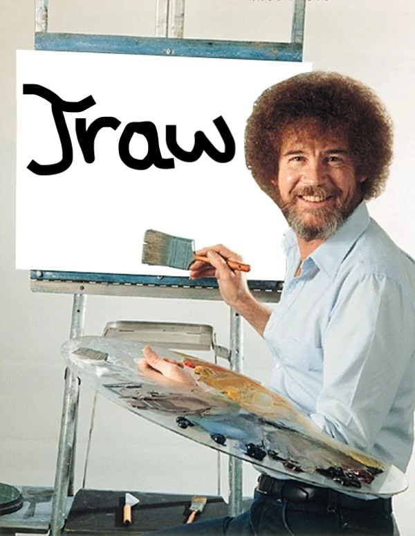

jraw
A JavaFX drawing application with shape editing, freehand drawing, save/load, and undo/redo.

I developed Jraw with a team for Software Design, using MVC architecture to separate the interface from the model. We worked through Git branches, pull requests, and daily Scrum standups.
a small drawing studio
The application supports circles, rectangles, freehand squiggles, and multi-point polylines. Shapes can be selected and resized, with live previews, filled or outlined styles, and randomly generated colors.
Drawings live on a 500 × 500 canvas. Users can undo and redo changes, start a fresh canvas, or save and reopen drawings in a custom, versioned text format.
design behind the tools
- MVC separates drawing data, interface, and user actions.
- Command represents operations as
PaintCommandobjects and supports undo/redo. - Observer keeps the view in sync with changes to the model.
- Strategy supplies different drawing behavior for each shape.
- Factory creates the appropriate shape-manipulation strategy.
- Visitor separates rendering through
DrawVisitorfrom persistence throughSaveVisitor.
what i learned
The project put object-oriented design patterns into practice within a working desktop interface. It also gave me experience with Java modules, JUnit tests for model and drawing behavior, and state-machine parsing with error handling for the saved file format.
built with
Java 22, JavaFX, Maven, JUnit, the Java Platform Module System, and Git.
source availability
The code is private under university academic-integrity policies. Contact me to discuss the implementation or request a review.